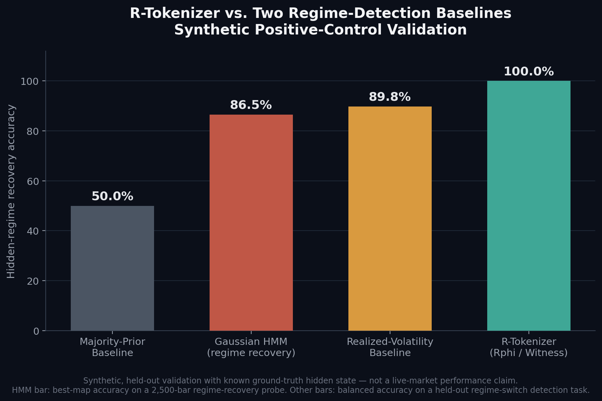
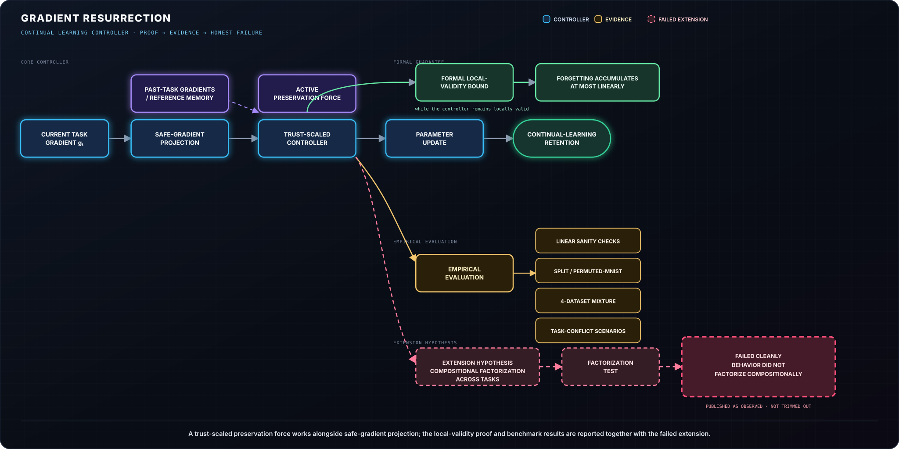
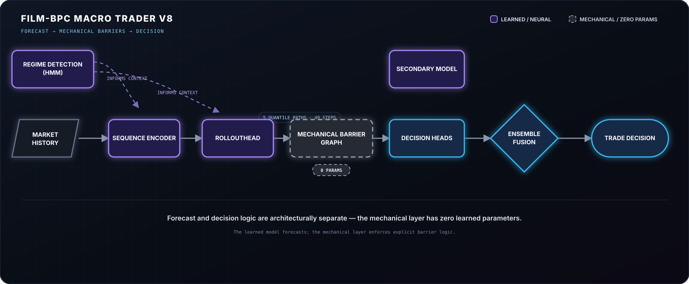
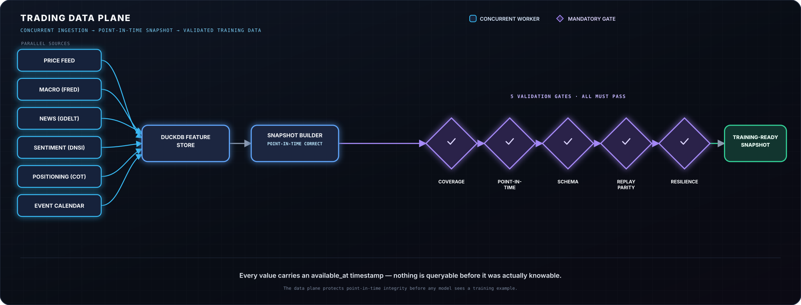
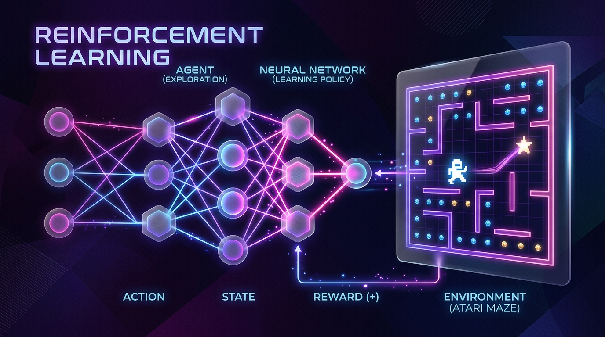
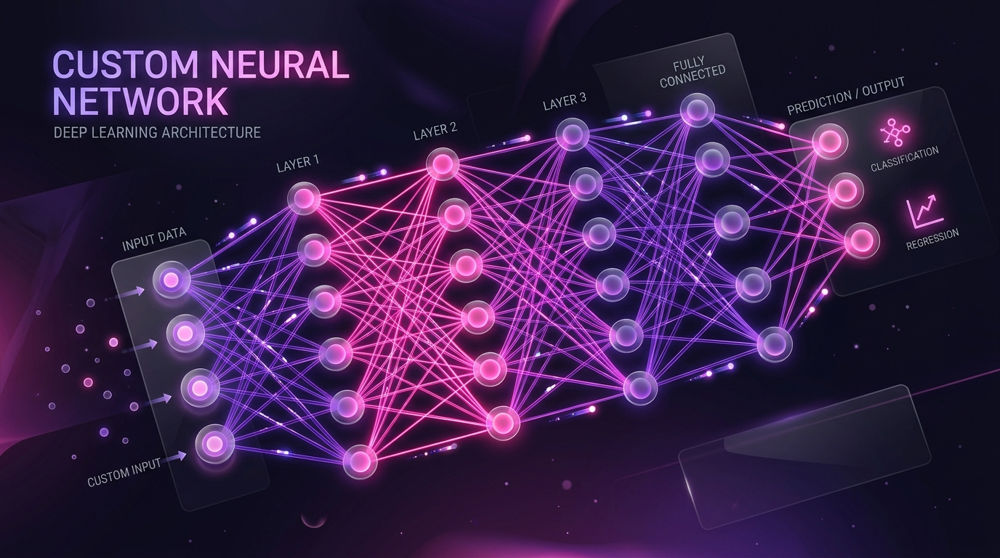
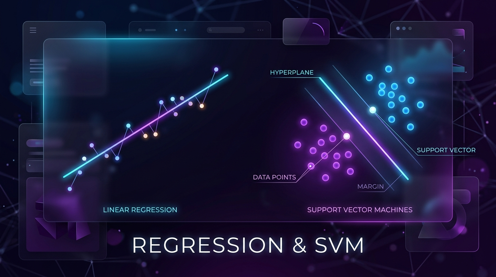
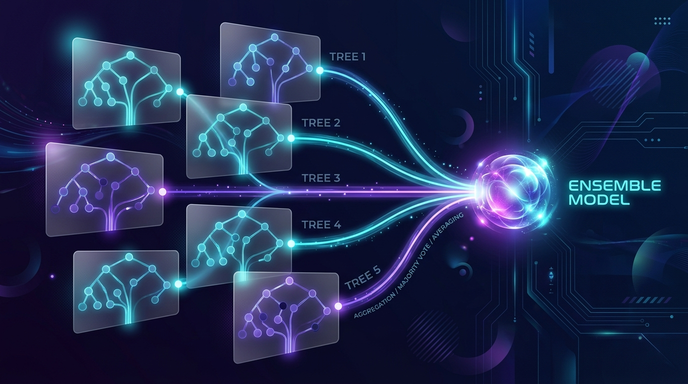

ML/Quant Research & Data Systems
Beyond application support and software engineering, I conduct independent research into complex ML systems, time-series forecasting, and trading algorithms. Evaluating machine-learning systems using leakage controls, time-based validation, class-performance analysis, and business-impact metrics.

R-Tokenizer Regime Validation
A learned market-state representation validated against two regime-detection baselines.
A learned market-state representation validated against two regime-detection baselines on synthetic positive-control data. Description + results only — no code.

Continual Learning Controller
Gradient resurrection: a theoretically-derived, trust-scaled controller for continual learning.
Gradient resurrection: a theoretically-derived, trust-scaled controller for continual learning, with full proof and an honestly-reported failed extension hypothesis.

FILM-BPC Macro Trader V8
World-model architecture for FX trading — forecasting and decision logic kept fully separate and auditable.
A trading system built around the idea that a policy should be inspectable, not a black box. A forecasting head predicts five quantile price paths (not a single point estimate) over a 40-step horizon; a zero-learned-parameter module then deterministically computes trade outcomes from that forecast, so the "what happens if this trade is taken" logic is fully separate from — and auditable independent of — the model that's actually learning. Regime state is discovered via HMM and cross-checked against a separate rule-based validation layer before being trusted operationally. Validated across 279 walk-forward folds on 2019-2026 FX data, benchmarked against random, heuristic, classic technical, and standard ML baselines — including a "cheating" oracle baseline — to establish what a real edge looks like versus chance.

Trading Data Plane
Production-grade, point-in-time-correct market data infrastructure for FX.
Six concurrent workers (price, macro, news, sentiment, positioning, event calendar) feed a unified DuckDB feature store, gated by five automated validation checks — coverage, point-in-time correctness, schema stability, replay parity, and resilience — before any snapshot is trusted for training. Every value carries an "available_at" timestamp, so nothing is queryable before it was actually knowable at that point in time, eliminating an entire class of lookahead bugs common in backtested trading systems.
Early Foundational Projects
Core algorithms and ML theory implemented from scratch.

Reinforcement Learning
TensorFlow/Keras implementation of Double Dueling DQN for trading signal generation and Atari gameplay.
View Repository
Custom Neural Networks
Built custom model architectures, activation functions, and training loops from the ground up.
View Repository
Regression & SVM
Linear regression, Support Vector Machines, and decision tree theory implemented on synthetic data.
View RepositoryDimensionality (PCA)
Dimensionality reduction built from scratch using Principal Component Analysis via SVD.
View Repository
Ensemble Learning
Classification and regression using bagging, boosting, and stacking methodologies.
View RepositoryMNIST Classification
Handwritten digit classification using SGD and k-NN, complete with deep error analysis.
View RepositoryHiring for an ML, quant, or data role?
I validate what I build — leakage controls, walk-forward testing, and honestly-reported negative results included.